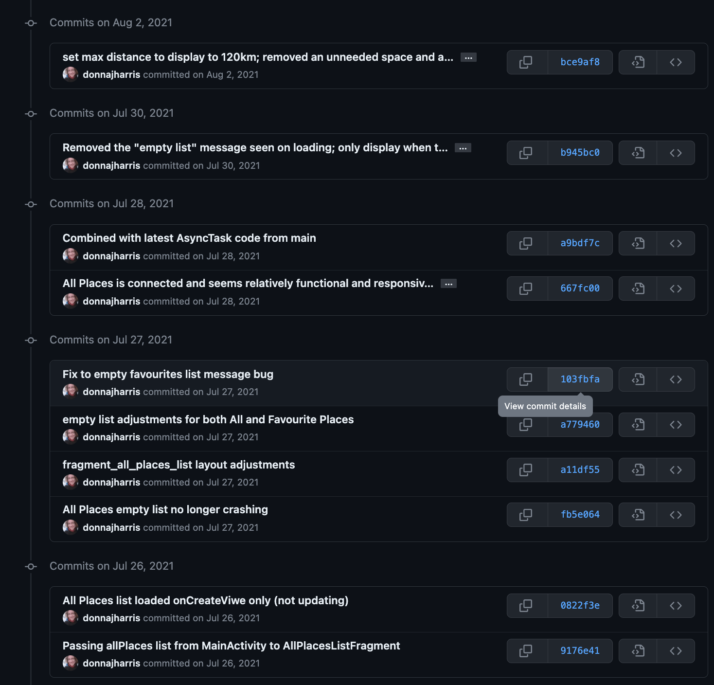
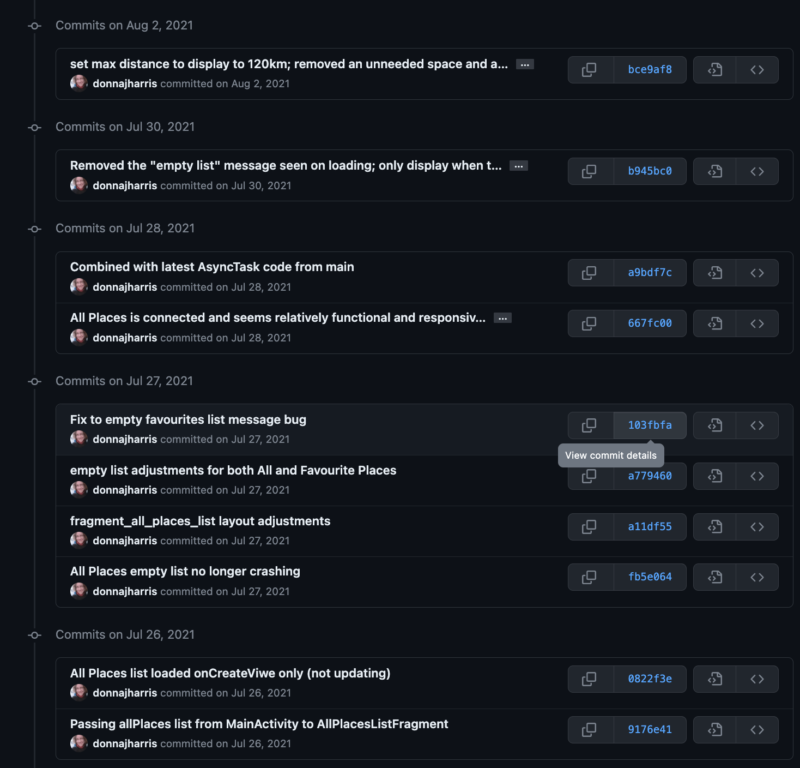
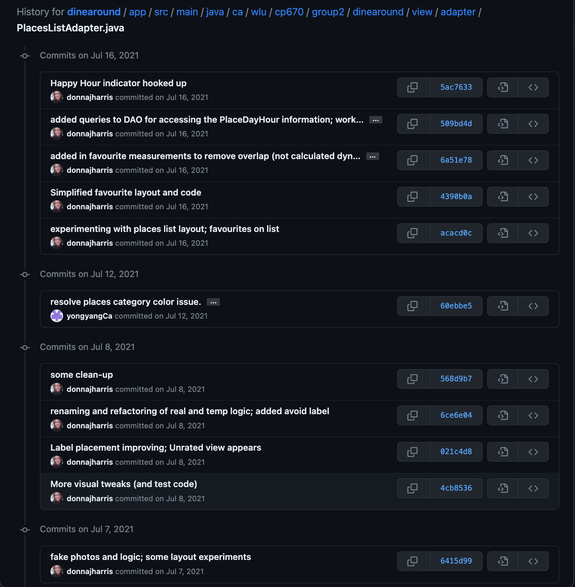
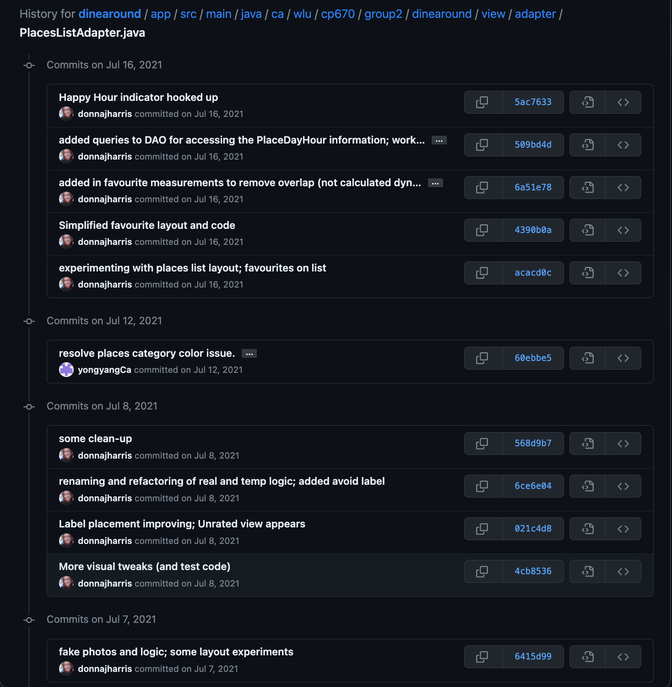

hi
Developing Dine Around

Dine Around was built as an Android development course final project. Our team of five built an app for tracking favourite restaurants, coffee shops, and bars.
My responsibilities and my confidence grew throughout the duration of the project.
I volunteered to take care of the app logo (created by combining and editing two Ballicon icons), which proved to be a precursor to handling the design and implementation of the app's lists of "Places" and "Favourite Places".
With helpful guidance from a professionally-experiened team member, I was introduced to techniques for developing the main list of places. Quite quickly, I was able to contribute independently and effectively, designing and implementing the list layout and functionality, obtaining regular feedback from the team.
I successfully built out my features and understood how other components would need to integrate. We worked together to connect the pieces and troubleshoot any issues that arose.
Unfortunately, the repository is not public at this time. What follows provides some insights into the app as well as my involvmenet in development and testing.
Places Lists
- Code Examples:
- PlacesListAdapter.java
- place_item.xml
All Places: These sample "All Places" lists show restaurants, coffee shops, and bars with various metadata, including ratings and favourites, open status and distance, if nearby.


place_item.xml defines the card layout for the All Places and Favourite Places lists. This screenshot of VS Code shows the XML file and resulting card layout using sample text.

The All Places and Favourite Places lists provide guidance by default whenever there are no results to display in the list.


Language Support
- Code Example:
- strings.xml (French)
Our application supported three languages: English, French, and Portugese. (It was a required element to support multiple languages.)
My role was to ensure that all strings were labelled and translated accordingly. I provided the French for the app and much of the English.
The different languages impacted the UI layout, as some languages have longer or shorter words and phrases than others. It was an interesting challenge to update the layout for this purpose. The VS Code image above of the place_item.xml layout shows the test strings used towards the end of the project, including the longest words and phrases explicitly used by the application.
Testing Dine Around
While there was much manual regression and feature testing all throughout the project, there was a requirement to provide unit testing in the codebase.
A number of helper classes containing business logic were relatively well isolated. As a result, these could be tested directly, making them good candidates for code-level test automation.
I provided tests for the code I wrote, as well as some other helper classes. Below, I include test code and the file under test for these instances.
Testing TimeHelper.java
- Tested by:
- TimeHelper.java
Testing PlaceDayHourHelper.java
Related Commit History
Screenshots from GitHub of the commit history for the project files mentioned here are included below. These screenshots provide evidence of my ongoing project development activity throughout the duration of the project and show some indication of my activities.
Commit History for PlacesListAdapter.java
 


 


Commit History for place_item.xml
Commit History for strings.xml (French)
Commit History for TimeHelper.java

Commit History for TimeHelperUnitTests.java
Commit History for PlaceDayHourHelper.java
Commit History for PlaceDayHourHelperUnitTests.java
Commit History for PlaceDayHourIntegrationTests.java